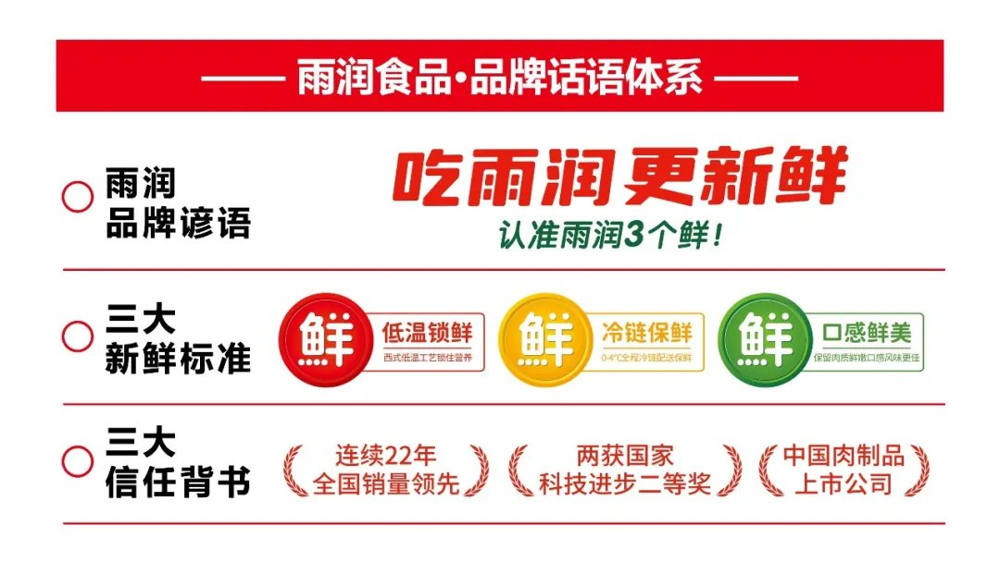
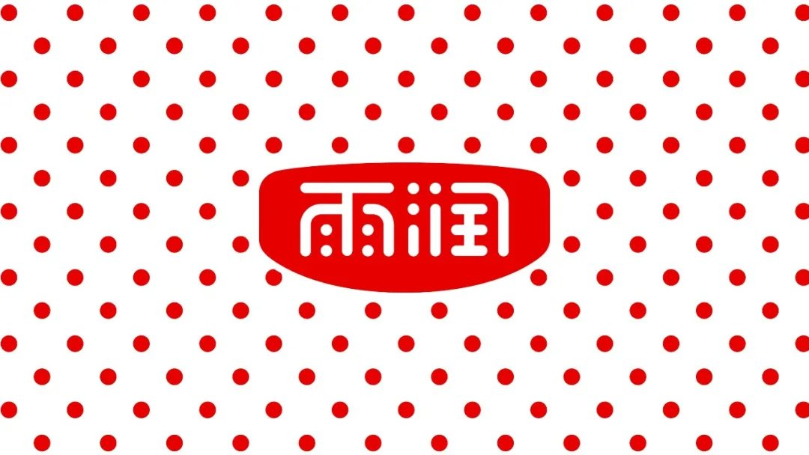
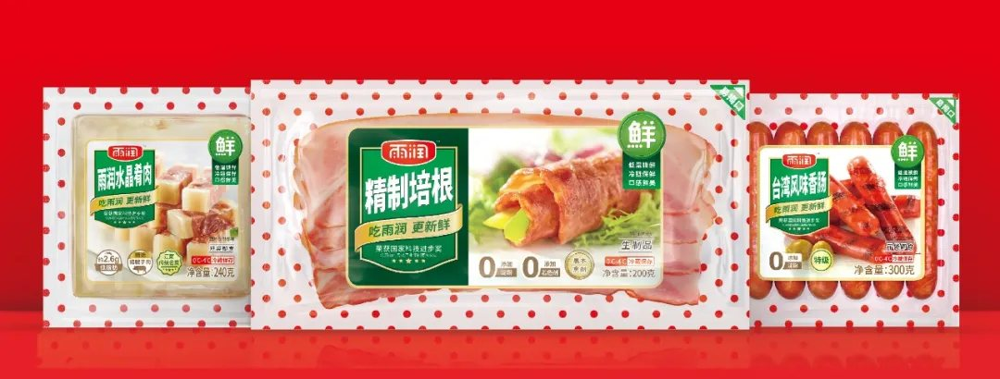
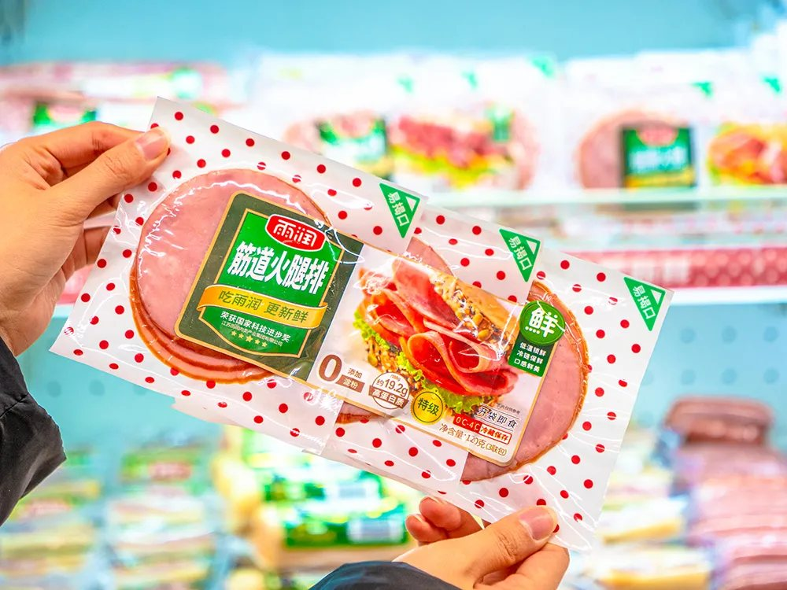
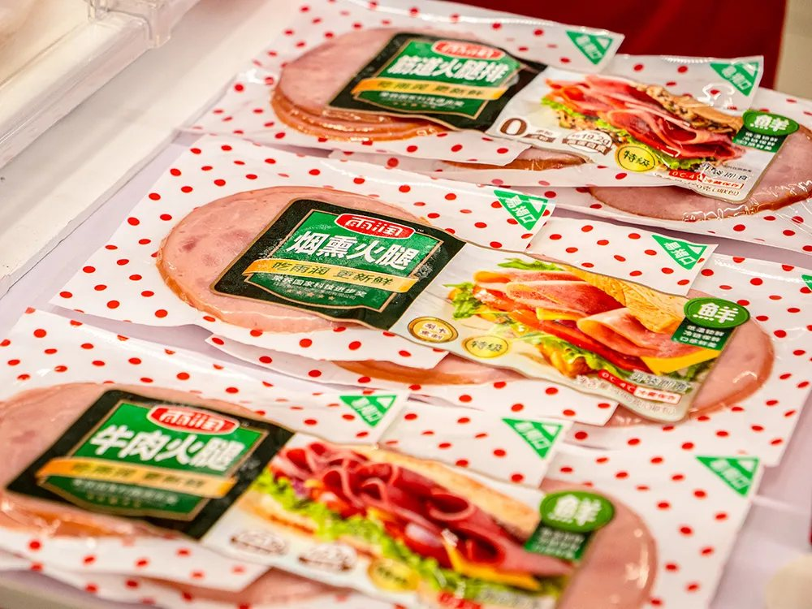
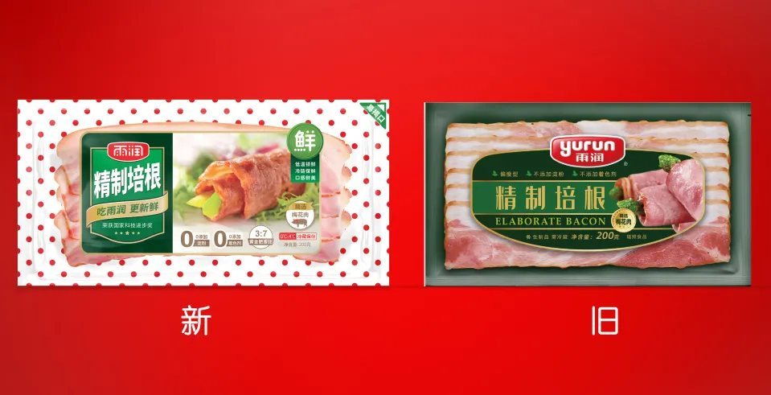
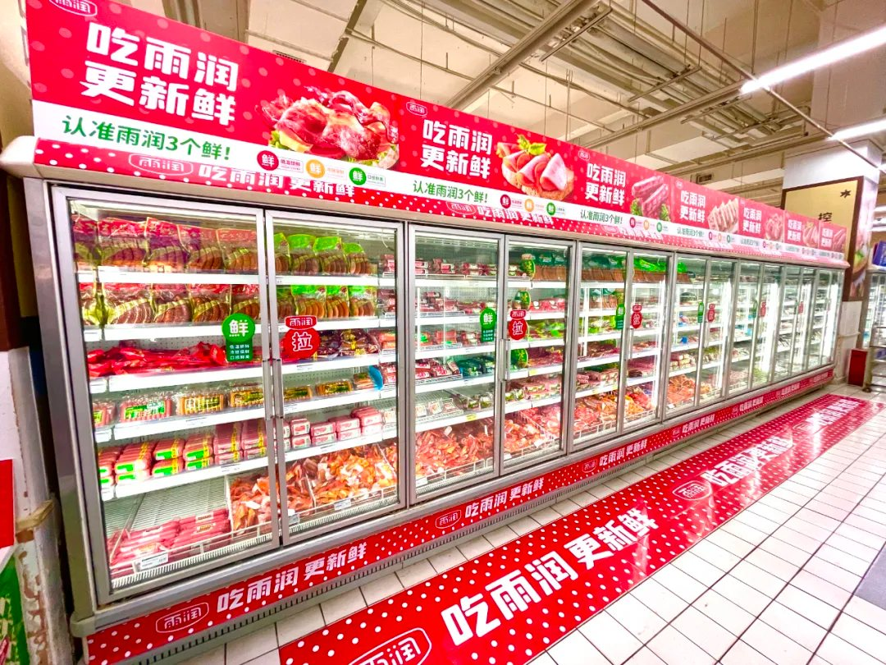
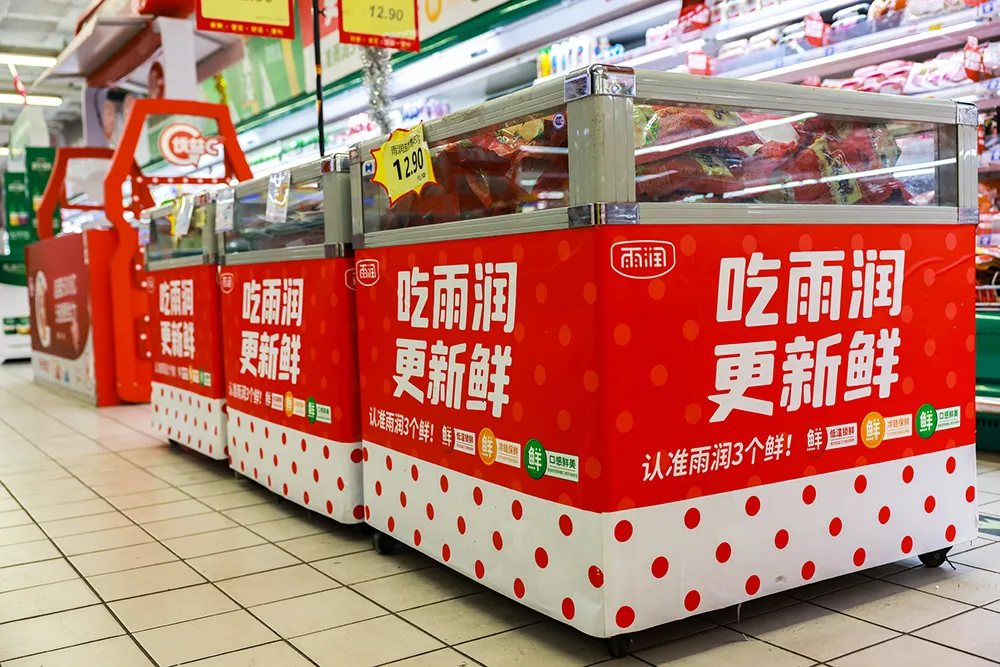
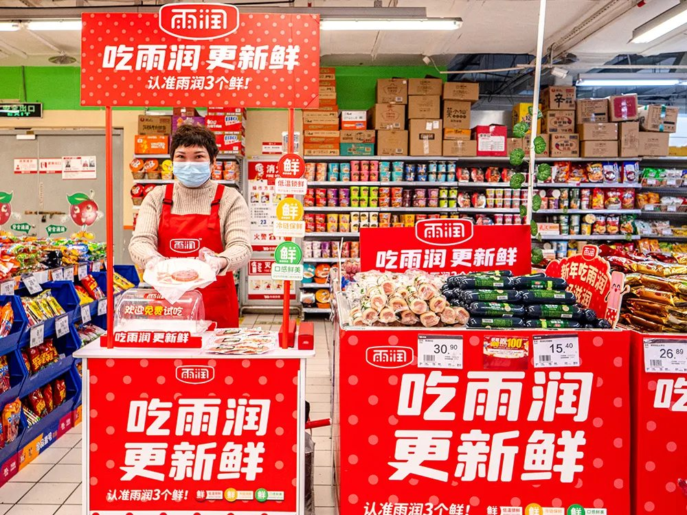

本期为你分享的是“雨润食品品牌谚语、超级符号及全新产品包装设计”。雨润食品成立于 1993 年，是中国低温肉制品的开创者，低温肉制品市场占有率已连续22 年位居全国第一。2021 年，华与华与雨润食品开启战略咨询合作，打造了雨润食品的超级符号、品牌谚语和全新的包装设计，并在终端快速进行全面媒体化落地，为雨润食品建立了全新的品牌资产储蓄罐。
#华与华新作#雨润食品 品牌谚语
▲华与华为雨润食品创意的品牌谚语建立品牌，一定要建立品牌谚语，无论多么复杂的业务，用一句话说明白，一句话打动顾客。基于对市场及消费者的洞察，挖掘雨润产品为消费者提供的核心价值。我们找到了低温肉制品对于消费者的普遍关注点“新鲜”，提出雨润食品的品牌谚语：吃雨润，更新鲜，认准雨润 3 个鲜。

用红黄绿三色“红绿灯”的设计元素，创意“雨润鲜字标”进行统一，提出雨润的三大新鲜标准：低温锁鲜、冷链保鲜、口感鲜美；并通过企业寻宝的挖掘，建立雨润对外传播的核心话语体系。
#华与华新作#雨润超级符号及产品包装
▲华与华为雨润食品创意的超级符号雨润波点花边
建立品牌的超级符号，要用货架思维去思考，雨润低温肉制品 sku 众多，且冷柜陈列环境复杂，如何能一眼“被发现”是快销品在终端的决胜点。


基于此，我们提出要用“花边战略”来统一产品，建立品牌资产，用花边获得货架的陈列优势，让产品从中跳出来。我们发挥品牌与生俱来的戏剧性，从雨润的品牌名和品牌字体中，提炼出“波点”的符号元素，提出“雨润波点”的超级花边。并通过“雨润波点花边”全新设计了雨润的全系产品包装，通过一个包装，建立终端货架的陈列优势，让产品自己会说话，自己把货卖出去。


▲华与华为雨润食品设计的创新包装
▲新旧包装对比
最后通过终端全面媒体化策略，用“波点花边”全新升级雨润的终端形象，让雨润从话语到包装再到终端进行了全面的升级，建立了品牌全新的资产。




目前，雨润食品首批全新包装和终端形象已陆续全国各大商超，欢迎大家购买体验！
